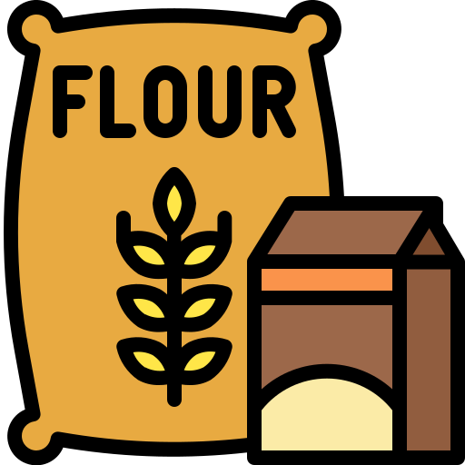
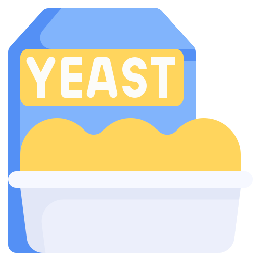

Receitas Doces
Mousse de Morango
Ingredientes
 400g de morangos frescos
400g de morangos frescos
 1 caixa de creme de leite (200g)
1 caixa de creme de leite (200g)
1 lata de leite condensado (395g)
1 envelope de gelatina sem sabor (12g)
 2 colheres de sopa de açúcar
2 colheres de sopa de açúcar
5 colheres de sopa de água quente
Modo de Preparo
- Lave e retire os cabinhos dos morangos. Reserve alguns para decorar.
- Bata os morangos no liquidificador com o açúcar até virar um purê.
- Dissolva a gelatina na água quente e misture bem.
- No liquidificador, adicione o leite condensado, o creme de leite e a gelatina dissolvida ao purê de morango.
- Bata tudo por 2 minutos até ficar homogêneo.
- Despeje em taças ou em uma forma e leve à geladeira por no mínimo 3 horas.
- Decore com os morangos reservados e sirva gelado.
Tempo de preparo: 20 min + 3h de geladeira | Porções: 6
Bolo de Cenoura
Ingredientes
 3 cenouras médias descascadas e picadas
3 cenouras médias descascadas e picadas
 3 ovos inteiros
2 xícaras de açúcar
3 ovos inteiros
2 xícaras de açúcar
 1 xícara de óleo de soja
1 xícara de óleo de soja

2 xícaras de farinha de trigo
1 colher de sopa de fermento em pó 4 colheres de sopa de chocolate em pó (cobertura)
4 colheres de sopa de chocolate em pó (cobertura)
 2 colheres de sopa de manteiga (cobertura)
2 colheres de sopa de manteiga (cobertura)
 5 colheres de sopa de leite (cobertura)
5 colheres de sopa de leite (cobertura)
Modo de Preparo
- Preaqueça o forno a 180°C e unte uma forma com manteiga e farinha.
- No liquidificador, bata as cenouras, os ovos e o óleo até ficar homogêneo.
- Transfira para uma tigela e adicione o açúcar, misturando bem.
- Acrescente a farinha de trigo aos poucos, mexendo delicadamente.
- Por último, adicione o fermento e misture com cuidado.
- Despeje na forma e asse por 35 a 40 minutos. Faça o teste do palito.
- Para a cobertura: misture o chocolate, a manteiga e o leite em uma panela e leve ao fogo médio, mexendo até engrossar.
- Despeje a cobertura quente sobre o bolo ainda na forma e sirva.
Tempo de preparo: 1 hora | Porções: 8 a 10